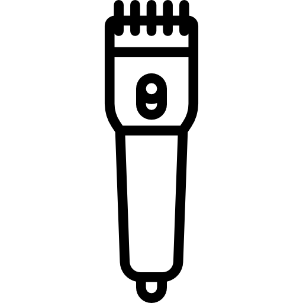
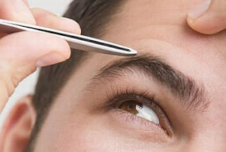

Cortes
Some representative placeholder content for the three columns of text below the carousel. This is the first column.
Cortes mais famosos most famous cuts.
O corte taper fade é uma das grandes tendências de corte masculino, que também faz parte dos estilos de cabelo de cria que estão na moda. Além do degradê, esse corte tem mais volume na parte de cima da cabeça e pode ser adotado por quem tem cabelos lisos, cacheados, ondulados ou crespos.

Barbas beard
A Barba por Fazer, a Favorita, o Estilo de Barba que mais atrai o público feminino, eita! Mas também bem cuidada, quase que unanimidade.
Design sombraçelha eyebrow drawing
A técnica do design na sobrancelha masculina não há pontos de arqueamento. O design será realizado a fim de organizar e alinhar os fios, respeitando o formato de rosto masculino
Placeholder